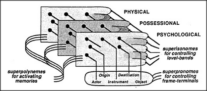

What enables us to comprehend Mary gives Jack the kite in so many ways at once? Different meanings don't conflict when they apply to separate realms — but that can't be quite what's happening here, since the physical, social, and mental realms are closely linked in many ways. So now I'll argue just the opposite, that these meanings are so similar they don't conflict! Here is my hypothesis about what holds together all these aspects of our thoughts:
Many of our higher level conceptual-frames are really parallel arrays of analogous frames, each active in a different realm.
Consider all the different roles played by the Actor pronome of our sentence. In the physical realm, the Origin of give is Mary's hand. In the possessional realm of give and take, that Origin is in Mary's estate — since Mary can only give Jack what she owns. Similarly, in the physical realm, it is the kite itself that moves from Mary's hand to Jack's; however, in the realm of estates, the kite's ownership is what changes hands.
This suggests that certain pronomes can operate in several different realms at once. Let's call them paranomes to emphasize their parallel activities. When the language-agency activates some polynemes and paranomes, these agents run crosswise through the agencies of various realms to arouse several processes and frames at the same time; these correspond to different interpretations, in different realms, of the same phrase or sentence. Then, because each major agency contains its own memory-control system, the agencies within each realm can simultaneously apply their own methods for dealing with the corresponding aspect of the common topic of concern. In this way, a single language-phrase can at the same time evoke different processes involved with social dispositions, spatial images, poetical fancies, musical themes, mathematical structures — or any other assortment of types of thought that don't interfere too much with one another.
This is not to say that all these different modes of thought will proceed independently of one another. Whenever any process gains momentary control over a paranome, many other processes can be affected. For example, one agency's memory-control process might thus cause the agencies in several other realms simultaneously to blink on and off their Origin and Destination paranomes. This would force the agencies active in each of those realms to focus upon whichever types of differences they then discern; then, in between such episodes, each agency can apply its own way of thinking to the corresponding topic, difference, or relationship. By using these cross-connecting polynemes and paranomes, the activity in each realm can proceed sometimes independently, yet at other times influence and be affected by what happens in the other realms.